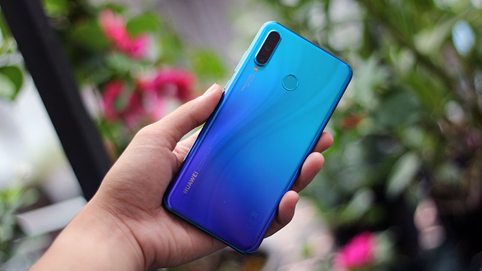
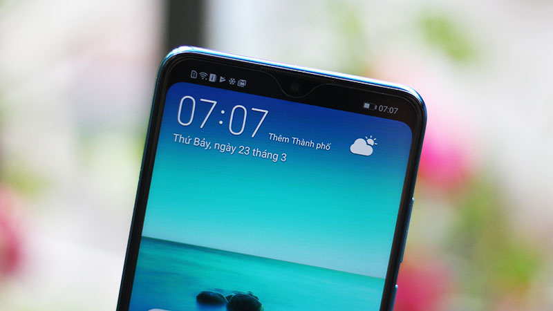
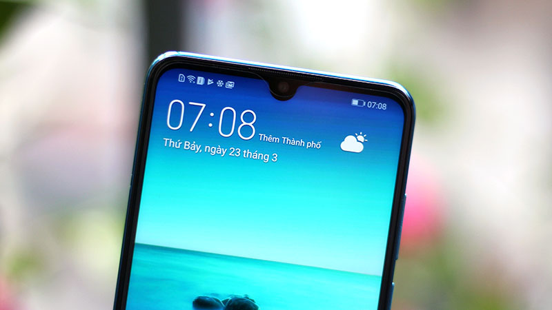
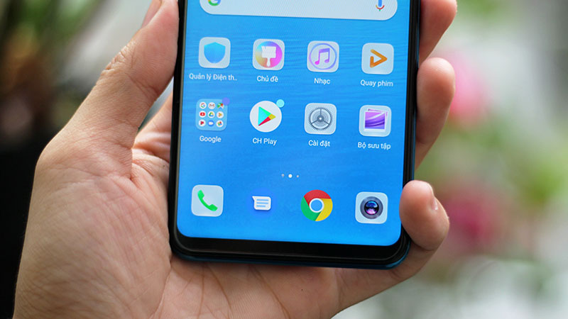
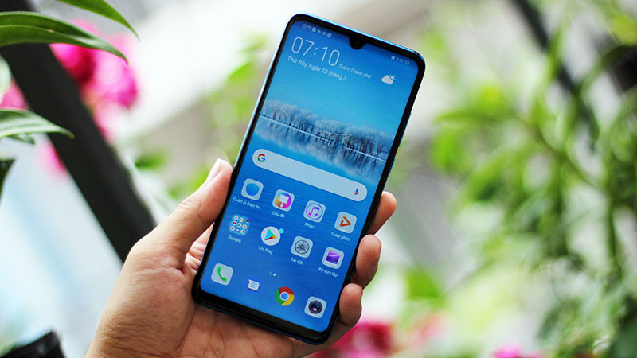
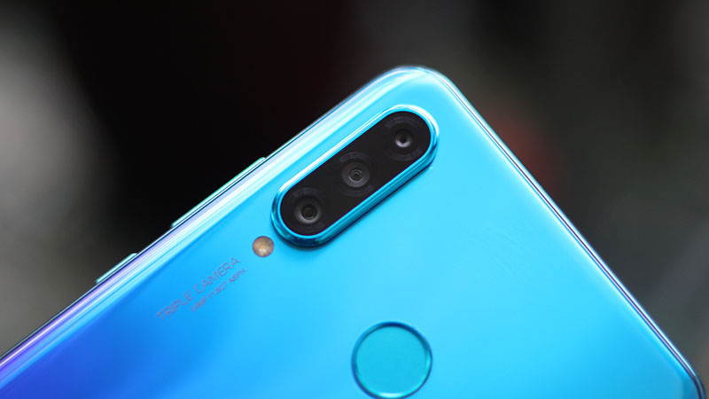
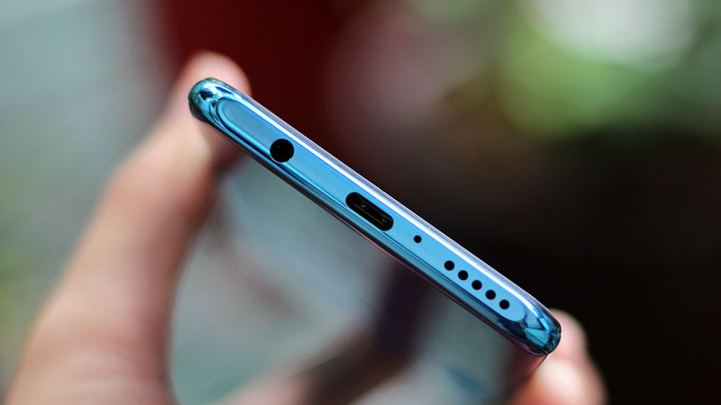
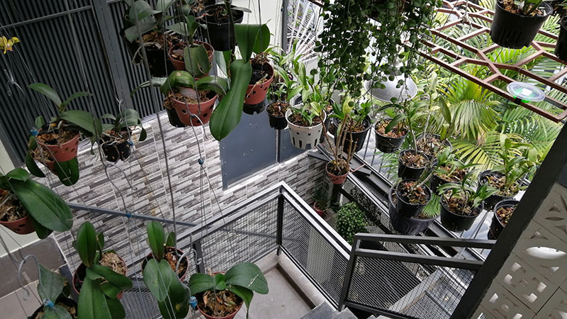

Điểm nhấn đáng chú ý nhất trên chiếc điện thoại Huawei là hệ thống 3 camera sau bao gồm cảm biến chính 24 MP (khẩu độ f/.8), cảm biến độ sâu 2 MP và cảm biến 8 MP hỗ trợ chụp góc rộng.
Với việc hỗ trợ thêm một camera góc rộng thì bạn có thể có được cho mình những bức ảnh với phong cách rộng tuyệt đẹp, không bỏ sót bất cứ thứ gì.
Đồng thời, camera của máy còn có chế độ chụp ảnh đêm mới và tích hợp AI để tối ưu chụp ảnh, tạo nhãn dán AR hay tìm kiếm thông tin trên ảnh.
Đây cũng là chiếc điện thoại đầu tiên của Huawei được trang bị camera selfie lên đến 32MP, cao nhất thế giới hiện nay, hứa hẹn đem đến cho người dùng những bức ảnh tự sướng có chất lượng cao.
Tất nhiên cũng không thể thiếu tính năng làm đẹp bằng AI cho camera trước, máy sẽ làm đẹp dựa trên cấu trúc và hình dạng khuôn mặt của mỗi người sẽ đảm bảo bạn luôn có được những bức hình rạng rỡ nhất.
Huawei P30 Lite cải thiện RAM và dung lượng bộ nhớ tạo ra nhiều không gian lưu giữ hơn cho những thứ bạn yêu thích.
Bạn có thể thoải mái lưu trữ bài hát, hình ảnh hay video trong thời gian dài mà không phải xóa đi bất cứ thứ gì.
Bên cạnh đó GPU Turbo đã được nâng cấp thêm để hỗ trợ nhiều game hơn, cho phép HUAWEI P30 Lite mang đến người dùng trải nghiệm tốt hơn với mọi tựa game hàng đầu hiện nay.
Với P30 Lite, người dùng còn có thể tải clip trên các website hoặc nền tảng mạng xã hội để sử dụng tính năng hỗ trợ cài đặt nhạc chuông bằng video.
Huawei P30 Lite sở hữu màn hình "giọt nước" 6.13 inch với độ phân giải Full HD+ với tấm nền IPS cho màu sắc đẹp mắt, hình ảnh sắc nét.
Người dùng cũng sẽ có tính năng ẩn đi tai thỏ với cạnh viền bo cong thay vì đường thẳng, điều này tạo nên nét hài hòa cho máy khi nhìn vào tổng thể.
Dung lượng pin 3340 mAh của máy giúp bạn thoải mái sử dụng cả ngày mà không lo máy hết pin giữa chừng
Công nghệ sạc nhanh giúp tối ưu thời gian sạc đồng thời giúp bạn vẫn có được thời gian sử dụng thoải mái khi không có nhiều thời gian sạc pin.